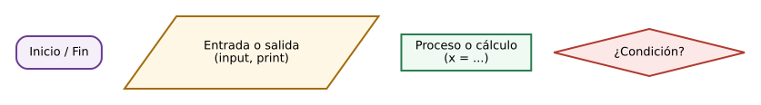
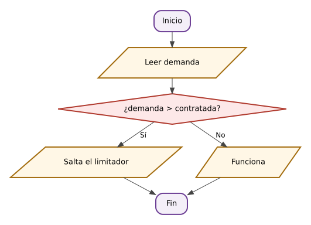
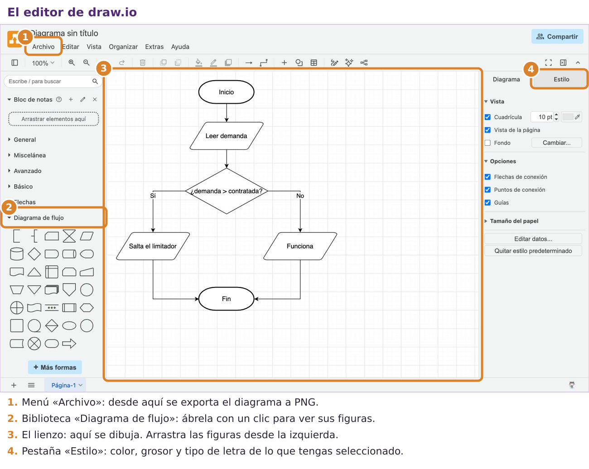
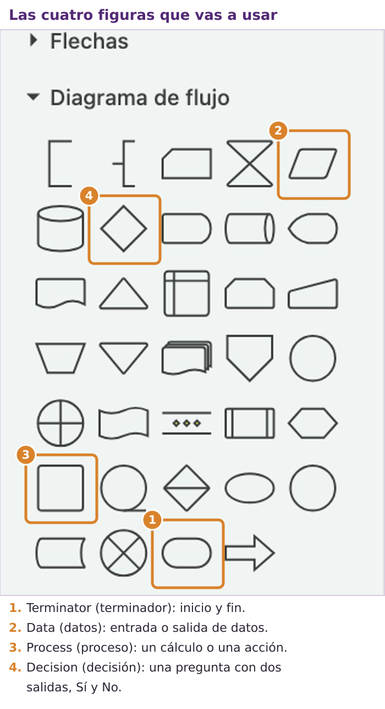
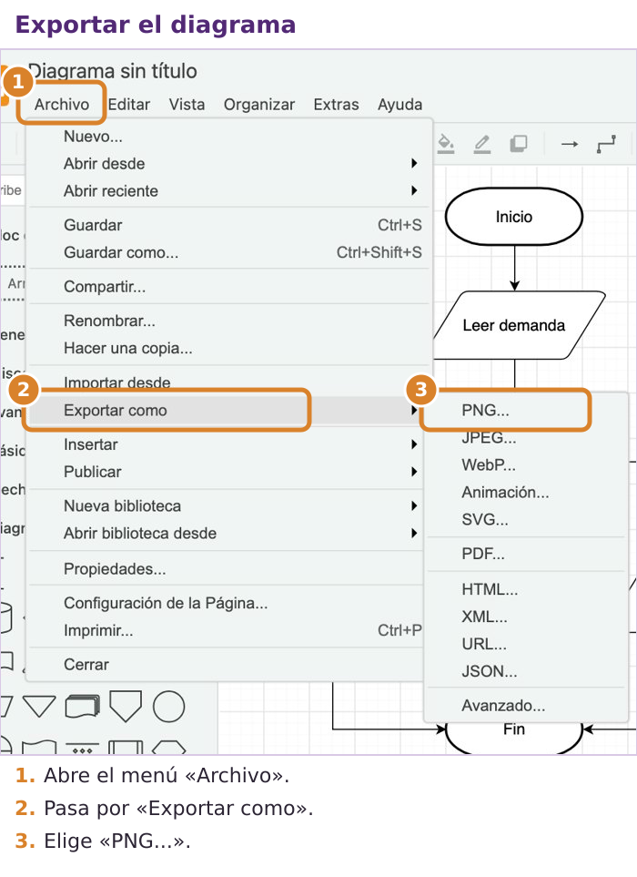
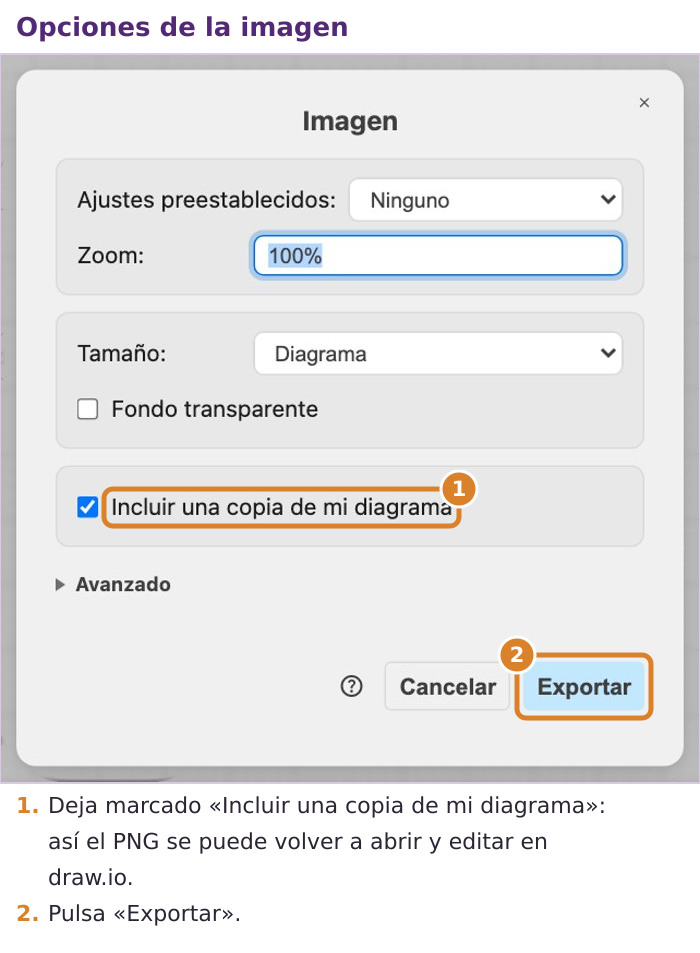
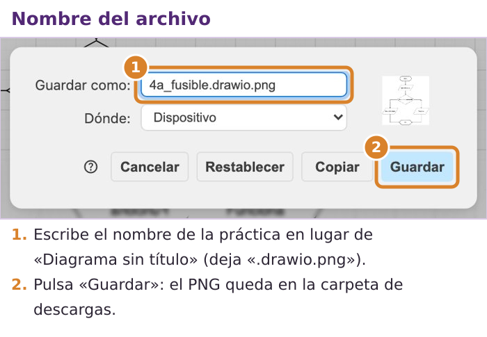

Qué vas a aprender en esta página
- a comparar valores y a combinar varias condiciones;
- a hacer que un programa tome decisiones: que haga una cosa u otra según los datos;
- a dibujar esas decisiones en un diagrama de flujo antes de programarlas;
- por qué en Python importan los espacios al principio de cada línea.
Comparar valores
Hasta ahora tus programas hacían siempre lo mismo, fueran cuales fueran los datos. Pero muchos problemas piden decidir: si la intensidad es muy alta, avisar; si no, seguir. Para decidir, primero hay que comparar. Una comparación es una pregunta que solo tiene dos respuestas: verdadero (True) o falso (False).
| Operador | Pregunta que hace | Ejemplo con I = 12 | Resultado |
|---|---|---|---|
== | ¿son iguales? | I == 12 | True |
!= | ¿son distintos? | I != 12 | False |
> | ¿es mayor? | I > 10 | True |
< | ¿es menor? | I < 5 | False |
>= | ¿es mayor o igual? | I >= 12 | True |
<= | ¿es menor o igual? | I <= 5 | False |
No confundas = con ==
Un solo igual, =, guarda un valor en una variable. Dos iguales, ==, preguntan si dos valores son iguales. Confundirlos es el error más frecuente al empezar.
Varias condiciones se pueden combinar en una sola con tres palabras:
and(«y»): es verdadero solo si las dos condiciones lo son.I > 10 and I < 20pregunta si I está entre 10 y 20.or(«o»): es verdadero si al menos una de las dos lo es.not(«no»): da la vuelta al resultado: lo verdadero pasa a falso y al revés.
Ejecuta este programa y comprueba cada resultado con la tabla:
I = 12
print(I > 10, I == 12, I != 12, I <= 5)
print(I > 10 and I < 20)
print(I < 5 or I > 10)
print(not I > 10)En la consola
True True False False
True
True
FalseDiagramas de flujo
Cuando un programa tiene que decidir, conviene dibujar antes los caminos posibles. Un diagrama de flujo es un dibujo del programa: cada paso es una figura y las flechas indican el orden. Estas son las figuras:

- El rectángulo con los extremos redondeados marca dónde empieza y dónde acaba el programa.
- El paralelogramo (rectángulo inclinado) es una entrada o una salida de datos: un
inputo unprint. - El rectángulo es un cálculo o una acción.
- El rombo es una pregunta. De él salen dos flechas: una para el «Sí» y otra para el «No».
Decidir con if y else
La instrucción if («si») ejecuta un grupo de instrucciones solo si la condición es verdadera. else («si no») ejecuta otro grupo solo si es falsa. Se escribe así:
if condición:
instrucciones si es verdadera
else:
instrucciones si es falsa
instrucciones que se ejecutan siempreFíjate en tres detalles, porque si falta alguno el programa da error:
- la línea del
ify la delelseterminan con dos puntos:; - las instrucciones que dependen de la condición van sangradas, es decir, desplazadas hacia la derecha cuatro espacios (o una pulsación de la tecla Tab). Así Python sabe qué instrucciones están «dentro» del
if; - lo que vuelve al margen izquierdo ya no depende de la condición: se ejecuta siempre.
Ejemplo paso a paso: ¿salta el limitador?
Problema: en una vivienda hay contratados 4,6 kW de potencia. Si los aparatos encendidos a la vez necesitan más, el limitador corta la luz. Queremos un programa que, dada la potencia de los aparatos encendidos, diga si salta el limitador o no, y cuánto falta o sobra.
1. Analizar. Entrada: la potencia en uso. Salida: un mensaje. Proceso: comparar la potencia en uso con la contratada; según el resultado, escribir un mensaje u otro.
2. Planificar. Esta vez dibujamos el diagrama de flujo:

3. Escribir el código. El rombo se convierte en un if y cada flecha, en un camino:
# Ejemplo resuelto: ¿salta el limitador de potencia?
contratada = 4.6 # kW
demanda = float(input("Potencia en uso (kW): "))
if demanda > contratada:
print("Salta el limitador: sobran", round(demanda - contratada, 2), "kW")
else:
print("Funciona. Margen libre:", round(contratada - demanda, 2), "kW")4. Comprobar con un caso de cada camino:
Con 5,2 kW (más que lo contratado)
Potencia en uso (kW): 5.2
Salta el limitador: sobran 0.6 kWCon 3,1 kW (menos)
Potencia en uso (kW): 3.1
Funciona. Margen libre: 1.5 kWDibujar diagramas de flujo con draw.io
Desde esta página, los diagramas de flujo de las prácticas se dibujan en el ordenador con draw.io (también se llama diagrams.net). Es la misma aplicación con la que dibujasteis la red PERT en la unidad de gestión de proyectos: funciona en el navegador, en español, sin instalar nada y sin crear ninguna cuenta. Un diagrama hecho así es documentación técnica: se puede corregir, compartir y archivar, y otra persona puede entender tu programa sin leer el código.

A la izquierda, abre la biblioteca Diagrama de flujo. Tiene muchas figuras, pero solo necesitas cuatro. Si dejas el ratón quieto sobre una figura, aparece su nombre en inglés:

Cómo se dibuja:
- Arrastra cada figura desde la biblioteca hasta el lienzo.
- Haz doble clic dentro de una figura para escribir su texto (por ejemplo, Leer demanda).
- Para unir dos figuras con una flecha, pasa el ratón por encima de la primera: aparecen unas flechas azules a su alrededor. Arrastra la flecha azul del lado que quieras hasta la segunda figura y suéltala encima.
- Haz doble clic en una flecha para escribirle un texto. Las dos flechas que salen de cada decisión tienen que llevar Sí y No.
- Para mover algo, arrástralo; para borrarlo, selecciónalo y pulsa la tecla Supr.
Cómo se guarda para entregarlo: el diagrama se exporta como imagen PNG.



Si dejas marcada la casilla Incluir una copia de mi diagrama, el PNG lleva dentro el diagrama editable: puedes volver a abrirlo en draw.io (Archivo → Abrir desde → Dispositivo) para corregirlo, sin necesidad de guardar ningún otro archivo.
Más de dos caminos: elif
A veces hay más de dos posibilidades. Para eso está elif, abreviatura de «else if» («si no, si…»). Python prueba las condiciones de arriba abajo, ejecuta solo la primera que se cumple y se salta todas las demás, aunque también se cumplan. Si no se cumple ninguna, ejecuta el else final.
I = float(input("Intensidad (A): "))
if I <= 10:
print("Consumo bajo")
elif I <= 16:
print("Consumo medio")
elif I <= 25:
print("Consumo alto")
else:
print("Sobrecarga: revisar la instalación")Con una intensidad de 18 A
Intensidad (A): 18
Consumo altoCon 18 A, Python pregunta: ¿18 <= 10? No. ¿18 <= 16? No. ¿18 <= 25? Sí: escribe «Consumo alto» y termina, sin mirar el else. Por eso el orden de las condiciones importa: si pusieras primero I <= 25, cualquier intensidad menor de 25 A saldría como «consumo alto».
Ahora tú: ¿qué escribe este programa?
No se entrega ni cuenta para la nota: sirve para comprobar si lo has entendido.
Sigue el programa a mano, condición por condición, y anota si cada una se cumple. Después compruébalo en online-python.
x = 7
y = 4
if x > y and x % 2 == 0:
print("A")
elif x > y or y == 4:
print("B")
else:
print("C")
print("Fin")Ver la solución
En el if: x > y es verdadero, pero x % 2 == 0 es falso, porque 7 es impar y el resto de dividirlo entre 2 es 1. Con and hacen falta las dos, así que no entra. En el elif: x > y es verdadero y con or basta una: escribe B. El else se salta. La última línea está fuera, en el margen, así que se ejecuta siempre: escribe Fin.
Práctica 4a · Elegir el fusible
Dónde se hace: en una pestaña nueva de online-python llamada 4a_fusible.py. Pulsa + junto a las pestañas, escribe 4a_fusible y pulsa Intro (el editor añade .py solo).
Diagrama de flujo: antes de escribir el código, dibuja el diagrama de flujo del programa en draw.io (cómo se hace, más arriba en esta página) y expórtalo a PNG con el nombre 4a_fusible.drawio.png. Se entrega junto al ZIP de la página y se evalúa como documentación técnica: tiene que entenderse sin ayuda, usar bien las figuras, llevar «Sí» y «No» en las salidas de cada decisión y corresponderse con tu programa.
Un fusible protege un circuito: si la corriente supera un valor, se funde y la corta. Los fusibles se fabrican solo con unos valores fijos, llamados calibres: 6, 10, 16, 20, 25 y 32 A. Para un circuito se elige el calibre igual a la intensidad del circuito o, si no existe, el inmediatamente superior. Por ejemplo, para 7 A se elige el de 10 A. Si el circuito necesita más de 32 A, hace falta un fusible especial.
Qué tienes que hacer: un programa que pida la intensidad del circuito y diga qué fusible poner.
- Dibuja el diagrama de flujo en draw.io y expórtalo. Pista: es una «escalera» de preguntas, una por calibre.
- Escribe el programa: cada pregunta del diagrama será un
ifo unelif. - Compruébalo con todos los casos de la tabla:
| Intensidad (A) | Fusible |
|---|---|
| 4 | 6 A |
| 6 | 6 A |
| 7 | 10 A |
| 15 | 16 A |
| 18 | 20 A |
| 32 | 32 A |
| 40 | especial |
Mira bien los casos 6 y 32. Están justo en el límite y sirven para saber si has elegido bien entre < y <=.
¿Te has atascado? Abre aquí el programa con huecos
Este es el programa de la práctica con algunas partes borradas. Cada ____ es una palabra, un número o un signo que ya has visto en esta página o en las anteriores. Cópialo en tu pestaña, sustituye cada hueco por lo que falta y ejecútalo para comprobar que funciona. Intenta primero hacerlo sin abrir esto: se aprende mucho más.
# 4a_fusible: calibre comercial inmediatamente superior
I = float(input("Intensidad nominal (A): "))
if I <= 6:
print("Fusible: 6 A")
elif I <= ____:
print("Fusible: 10 A")
elif I <= 16:
print("Fusible: 16 A")
____ I <= 20:
print("Fusible: 20 A")
elif I <= 25:
print("Fusible: 25 A")
elif I <= 32:
print("Fusible: 32 A")
____
print("Fuera del catálogo doméstico: fusible especial")Práctica 4b · Clasificar materiales por su dureza (un paso más)
Dónde se hace: en una pestaña nueva de online-python llamada 4b_brinell.py. Pulsa + junto a las pestañas, escribe 4b_brinell y pulsa Intro (el editor añade .py solo).
Esta práctica la tiene que intentar todo el mundo. Es un paso más difícil que las anteriores: aplicas lo de la página a un problema nuevo y con menos ayuda. Si no te sale entera, no la dejes en blanco: entrega lo que hayas conseguido y escribe al principio del programa un comentario que explique hasta dónde has llegado y qué te falta. Forma parte de tu colección de programas.
Diagrama de flujo: antes de escribir el código, dibuja el diagrama de flujo del programa en draw.io (cómo se hace, más arriba en esta página) y expórtalo a PNG con el nombre 4b_brinell.drawio.png. Se entrega junto al ZIP de la página y se evalúa como documentación técnica: tiene que entenderse sin ayuda, usar bien las figuras, llevar «Sí» y «No» en las salidas de cada decisión y corresponderse con tu programa.
La dureza Brinell (se escribe HB) mide cuánto resiste un material a que se le clave una bola de acero. Cuanto mayor es el número, más duro es el material. De forma orientativa:
| Dureza (HB) | Clase | Ejemplos |
|---|---|---|
| menos de 100 | blando | aluminio recocido, plomo |
| de 100 a menos de 200 | semiduro | latón duro, acero recocido |
| de 200 a menos de 400 | duro | acero al carbono, fundición |
| 400 o más | muy duro | acero templado |
Qué tienes que hacer: un programa que pida la dureza de un material y para qué se va a usar («estructura» o «herramienta»), diga su clase y avise si no sirve para una herramienta de corte, que necesita una dureza de al menos 400 HB. Necesitarás and. Así debe comportarse:
Con 250 HB para herramienta
Dureza Brinell (HB): 250
Uso (estructura / herramienta): herramienta
Clase: duro
No es apto para herramienta de corteCon 100 HB para estructura
Dureza Brinell (HB): 100
Uso (estructura / herramienta): estructura
Clase: semiduro
Apto para ese usoAntes de cerrar el navegador: guarda y sube tu trabajo
Tus programas solo están guardados en el navegador de este ordenador. Para que no se pierdan y para que cuenten en tu colección, al terminar la página tienes que descargarlos y subirlos a Moodle. Comprueba primero que tienes estas pestañas, cada una con su programa funcionando:
4a_fusible.py4b_brinell.py
1. Descarga tus pestañas en un ZIP. Un ZIP es un único archivo que lleva dentro varios archivos.
- Pulsa el icono del disquete, arriba a la izquierda.
- En la ventana que se abre, elige All files as a ZIP («todos los archivos en un ZIP»).
- En ZIP file name escribe
pagina4. No pongas tu nombre: Moodle ya sabe quién lo sube. - Pulsa Download. El archivo
pagina4.zipse guarda en la carpeta de descargas del ordenador.
2. Súbelo a Moodle. Toda la unidad se entrega en una sola tarea, Colección de programas (Python), a la que irás añadiendo un ZIP por página.
- Abre la tarea Colección de programas (Python) en el curso de Moodle.
- La primera vez pulsa Agregar entrega; las siguientes, Editar entrega.
- Arrastra el ZIP a la zona de archivos, junto a los de las páginas anteriores, y también
4a_fusible.drawio.pngy4b_brinell.drawio.png, el diagrama de flujo que exportaste desde draw.io. Después pulsa Guardar cambios. - No pulses Enviar tarea todavía: eso se hace una sola vez, al terminar la página 8.
Lo que tienes que saber de esta página
- Una comparación (
== != < > <= >=) daTrueoFalse.=guarda;==compara. and: hacen falta las dos condiciones;or: basta una;not: da la vuelta.if,elifyelseterminan en:, y lo que depende de ellos va sangrado cuatro espacios.- Python prueba las condiciones de arriba abajo y solo ejecuta la primera que se cumple.
- Antes de programar una decisión, dibuja el diagrama de flujo. En draw.io: figuras Terminator, Data, Process y Decision; se entrega con Archivo → Exportar como → PNG.
Relaciona
Une cada figura de draw.io con lo que representa en un diagrama de flujo.
Une cada figura de draw.io con lo que representa en un diagrama de flujo.
", "showMinimize": false, "itinerary": {"showClue": false, "clueGame": "", "percentageClue": 40, "showCodeAccess": false, "codeAccess": "", "messageCodeAccess": ""}, "cardsGame": [{"url": "", "x": 0, "y": 0, "author": "", "alt": "", "audio": "", "color": "#000000", "backcolor": "#ffffff", "eText": "Terminator%20%28terminador%29", "urlBk": "", "xBk": 0, "yBk": 0, "authorBk": "", "altBk": "", "audioBk": "", "colorBk": "#000000", "backcolorBk": "#ffffff", "eTextBk": "El%20inicio%20o%20el%20fin%20del%20programa"}, {"url": "", "x": 0, "y": 0, "author": "", "alt": "", "audio": "", "color": "#000000", "backcolor": "#ffffff", "eText": "Data%20%28datos%29", "urlBk": "", "xBk": 0, "yBk": 0, "authorBk": "", "altBk": "", "audioBk": "", "colorBk": "#000000", "backcolorBk": "#ffffff", "eTextBk": "Pedir%20un%20dato%20o%20mostrar%20un%20resultado"}, {"url": "", "x": 0, "y": 0, "author": "", "alt": "", "audio": "", "color": "#000000", "backcolor": "#ffffff", "eText": "Process%20%28proceso%29", "urlBk": "", "xBk": 0, "yBk": 0, "authorBk": "", "altBk": "", "audioBk": "", "colorBk": "#000000", "backcolorBk": "#ffffff", "eTextBk": "Un%20c%C3%A1lculo%20o%20una%20acci%C3%B3n"}, {"url": "", "x": 0, "y": 0, "author": "", "alt": "", "audio": "", "color": "#000000", "backcolor": "#ffffff", "eText": "Decision%20%28decisi%C3%B3n%29", "urlBk": "", "xBk": 0, "yBk": 0, "authorBk": "", "altBk": "", "audioBk": "", "colorBk": "#000000", "backcolorBk": "#ffffff", "eTextBk": "Una%20pregunta%20con%20dos%20salidas%2C%20S%C3%AD%20y%20No"}], "isScorm": 0, "textButtonScorm": "Guardar la puntuación", "repeatActivity": true, "weighted": 100, "textAfter": "", "version": 2, "percentajeCards": 100, "type": 2, "showSolution": true, "timeShowSolution": 3, "time": 10, "evaluation": false, "evaluationID": "f96bc37c-5aaf-40e4-af65-a544218a46a6", "id": "idevice-1792952203271-i2uwg5ly2", "msgs": {"msgSubmit": "Enviar", "msgClue": "¡Genial! La pista es:", "msgCodeAccess": "Código de acceso", "msgPlayStart": "Pulsa aquí para jugar", "msgScore": "Puntuación", "msgErrors": "Errores", "msgHits": "Aciertos", "msgMinimize": "Minimizar", "msgMaximize": "Maximizar", "msgFullScreen": "Pantalla Completa", "msgExitFullScreen": "Salir del modo pantalla completa", "msgNoImage": "Pregunta sin imágenes", "msgEndGameScore": "Comience la partida antes de guardar la puntuación.", "msgScoreScorm": "La puntuación no se puede guardar porque esta página no forma parte de un paquete SCORM.", "msgOnlySaveScore": "¡Solo puede guardar la puntuación una vez!", "msgOnlySave": "Solo puede guardar una vez", "msgInformation": "Información", "msgYouScore": "Su puntuación", "msgAuthor": "Autoría", "msgOnlySaveAuto": "Su puntuación se guardará después de cada pregunta. Solo puede jugar una vez.", "msgSaveAuto": "Su puntuación se guardará automáticamente después de cada pregunta.", "msgSeveralScore": "Puede guardar la puntuación tantas veces como quiera", "msgYouLastScore": "La última puntuación guardada es", "msgActityComply": "Ya ha realizado esta actividad.", "msgPlaySeveralTimes": "Puede realizar esta actividad cuantas veces quiera", "msgClose": "Cerrar", "msgAudio": "Audio", "msgNumQuestions": "Número de tarjetas", "msgTryAgain": "Necesitas al menos %s% de respuestas correctas para obtener la información. Inténtalo de nuevo.", "msgEndGameM": "Has completado el juego. Tu puntuación es %s.", "msgUncompletedActivity": "Actividad no completada", "msgSuccessfulActivity": "Actividad superada. Puntuación: %s", "msgUnsuccessfulActivity": "Actividad no superada. Puntuación: %s", "msgTypeGame": "Relaciona", "msgCheck": "Comprobar", "msgRestart": "Reiniciar"}}Test
En las tres primeras preguntas, la variable x vale 7.